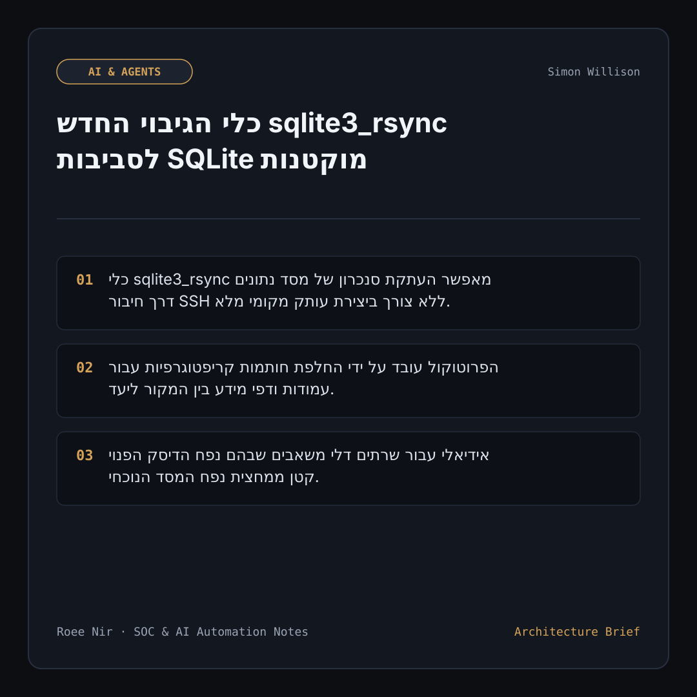

MANUAL PUBLISH PACK · Never auto-posted to LinkedIn without your click.
1. Visual Card (1080x1080)

2. פוסט מוכן + תגובה ראשונה
הנחת היסוד שצריך פי שניים מקום בדיסק כדי לגבות מסד נתונים פשוט הפסיקה להיות רלוונטית בסביבות מודרניות. הכלי sqlite3_rsync מציג גישה שונה לחלוטין שבה השרת המעתיק שולח חותמות קריפטוגרפיות עבור דפי מידע ולא את הקובץ כולו. בפועל, מה שזה אומר למפתחים זה שאפשר לבצע גיבוי וסנכרון מלא דרך חיבור SSH גם כשהמופע שלכם מנוצל מעל תשעים אחוז בלי קריסה. פרוטוקול העבודה משווה רק את הדפים ששנונים בפועל ודורש תוספת מינימלית של רוחב פס ברשת בלבד. זו דוגמה מצוינת לכלי שפתר צוואר בקבוק כלכלי והנדסי אמיתי עבור מערכות קטנות שרצים עליהן בסיסי נתונים עמוסים. אילו פתרונות גיבוי מותאמים לשרתים דלי משאבים אתם משלבים בארכיטקטורה שלכם כיום? #SQLite #Databases #DeveloperTools #CloudArchitecture #Backend
תגובה ראשונה (לשמירה על חשיפה אורגנית):
לקריאת המחקר והפירוט הטכני המלא מתוך Simon Willison: https://simonwillison.net/2026/Nov/26/sqlite3-rsync/